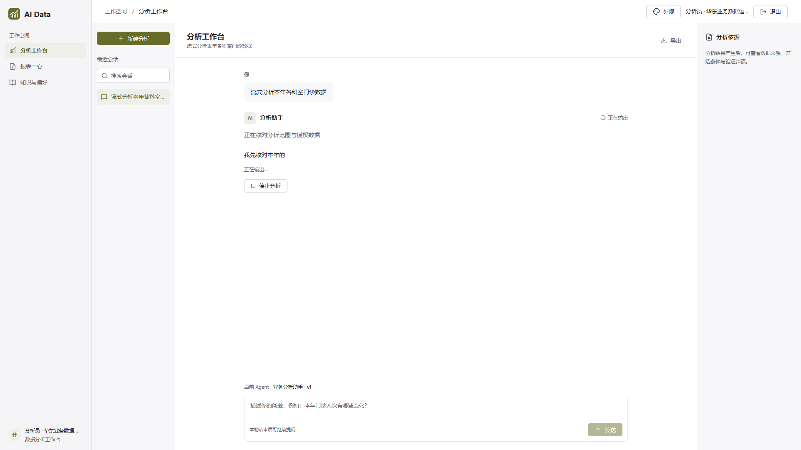
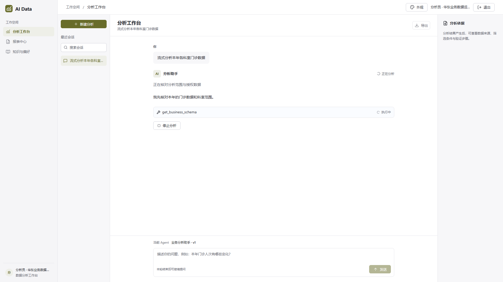
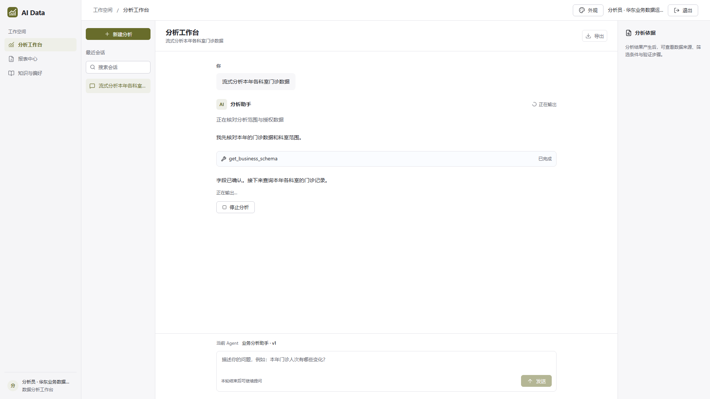
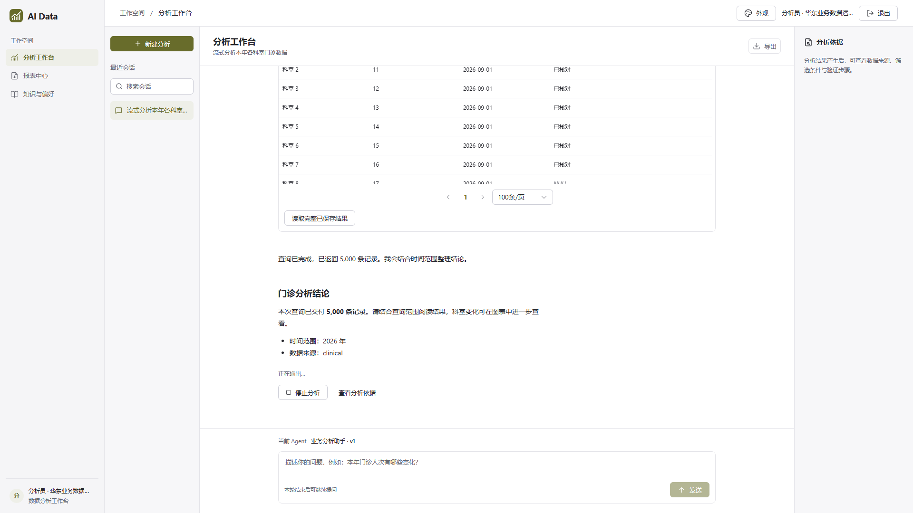
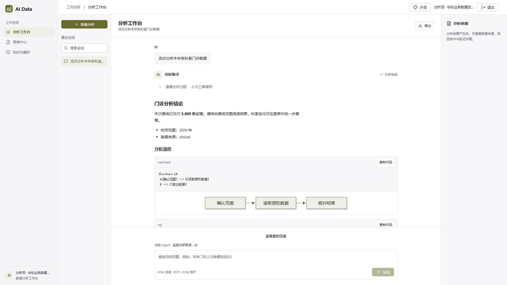
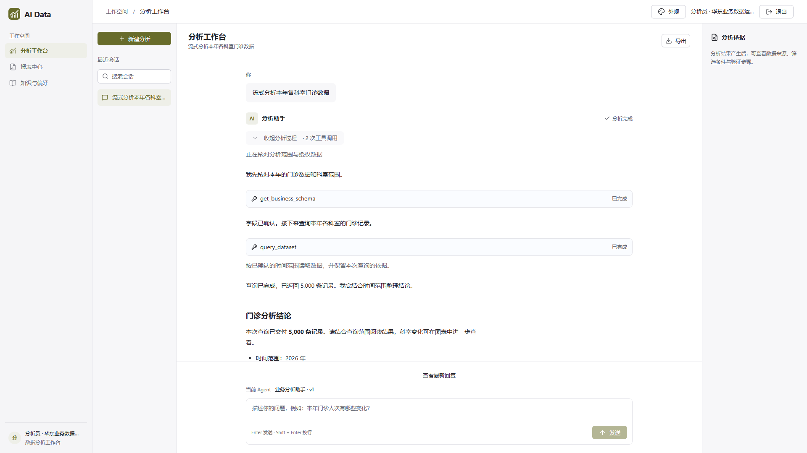

生产 Web 构建 · 隔离验收数据 · 1920×1080
文字随生成增长，工具在原位置更新状态，查询后的说明继续出现在时间线上。完成后自动收起过程，保留最终回答和结果；可点“查看分析过程”重新展开。
录屏包含流式输出、完成后收起与手动展开。此前真实 rj 验收记录到 2 段助手正文、72 个合并增量；时序另见页末记录。

整轮尚未结束，首段文字已经可见。

工具保留在实际调用的位置。

卡片状态更新，后续说明持续输出。

正文已经出现，整体状态仍在进行中。

最终回答和表格继续显示，工具与阶段说明集中在过程入口。

点击入口即可展开；刷新历史对话默认收起。